import numpy as np
def do_smoothing(points, steps):
"""Build average of neighboring points, apply it multiple times."""
for i in range(steps):
points = (points + np.roll(points, 1))/2
return pointsA random polygon evolves into an ellipse if we iteratively generate a new polygons with its edges being the center of the previous polygon: https://www.jasondavies.com/random-polygon-ellipse/
This phenomenon was recently brought forward in a notable but private discussion board by Dr. R. M. Of course, the following questions immediatley arise:
- Why does it result in ellipses?
- Why are they oriented on the 45° diagonal?
- And on Dr. A.L.’s special request: What properties of starting polyagon do we need to result in a circle?
We try to address these in the following.
Definition
We represent polygon points by numbers in the complex plane. This will turn out to lead to an elegant description of the phenomenon.
The averaging / smoothing of the polygon by calculating the point centers is implemented with
We need to visualize a list of points as polygons in the following. We define this helper function by
import matplotlib.pyplot as plt
def show_points(points, ax=None, labels=True, dots=True, linewidth=0.5):
"""Plot all points in complex plane. If given, use the axis given, otherwise build new figure."""
X = [x.real for x in points]
Y = [x.imag for x in points]
X.append(X[0]) # start point is end point
Y.append(Y[0])
if ax == None:
fig = plt.figure(figsize=[4,4])
ax = fig.add_subplot(111)
ax.set_aspect('equal', 'datalim')
if dots: ax.scatter(X,Y, color='red')
ax.plot(X,Y, color='black', linewidth=linewidth)
if labels:
for i in range(len(points)):
ax.annotate(i, (X[i], Y[i]), textcoords="offset points", xytext=(0,10))Polygon Evolution Example
Let us reproduce the phenomenon with an example. A random polygon is chosen by
N = 13
init_points = np.random.standard_normal(N) + np.random.standard_normal(N)*1j
show_points(init_points)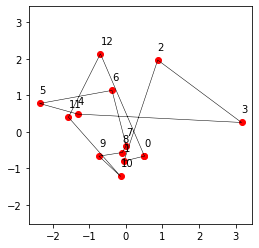
Let the smoothing process evolve:
points = init_points
# iterate smoothing:
steps = 3 # steps between plots
plt.figure(figsize=[10,10])
for i in range(16):
ax = plt.subplot(4,4,i+1)
show_points(points, ax)
points = do_smoothing(points, steps)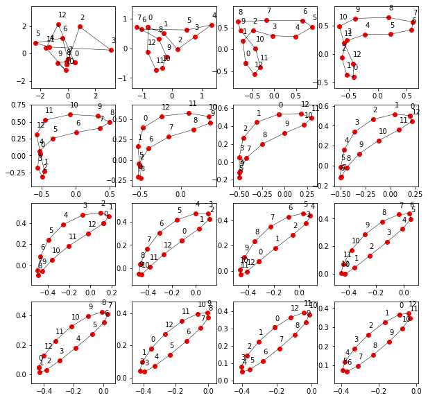
Answer to 2. Question
Why we observe 45° alignment can be answered here: We don’t observe that at all.
This peculiar alignment was an artifact of the zooming method which was used in [1]: While we iterate, the polygons get smaller in radius. If we zoom in X and Y direction independently, we will always make it look like being on a diagonal. The alignment is enforced by the zooming and has nothing to do with the smoothing procedure.
Above we use a uniform zoom factor (equal axis), which doesn’t break the rotation symmetry and thereby conserves to true alignment of the ellipse.
Prediction of Final Ellipse
The smoothing procedure is a linear operation which can be formulated in a matrix representation. \[\mathbb S \, \bf x_k = \bf x_{k+1}\]
To simplify the analysis, we can recall our QT lectures and do an eigenstate decomposition. Eigenstates (or eigenpolygons) do not change their shape shape under the smoothing operation but are only shrinked and rotated by a complex prefactor (eigenvalue).
\[ \mathbb S \, \bf{ x} = \lambda \bf{ x} \]
Dominant Eigenstates
Of course we could do a more strict analysis, but let’s do it physicist free-style way (although Dr. S. wasn’t very happy with that…):
We found from numerical calculation (eigenstate analysis) of some polybon point numbers N, that circlular arrangements are eigenstates. They have the largest eigenvalue, i.e. they are the least suppressed/decreased in size from generation to generation, while all the other eigenstates converge faster to zero extend. We have observed this for N=3 and 5, so it must be a very general fact, right?
Therefore, after a few iterations, circles are the only surviving contribution, everything else decreases much faster in size. So lets phrase the
Hypothesis: Circles are dominant eigenstates under the smoothing operation.
There are two independent cicular arrangments, namely
eigenstate1 = [np.exp(1j* 2*np.pi/N * k) for k in range(N)] # clockwise orientation
eigenstate2 = [np.exp(-1j* 2*np.pi/N * k) for k in range(N)] # counter-clockwise orientation
show_points(eigenstate1, plt.subplot(121))
show_points(eigenstate2, plt.subplot(122))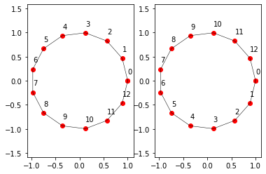
Note their clock/counter-clockwise orientation. Let’s check whether these are really eigenstates:
points = eigenstate1
# iterate smoothing:
n = 7
plt.figure(figsize=[15,3])
for i in range(n):
ax = plt.subplot(1,n,i+1)
show_points(points, ax)
points = do_smoothing(points, 1)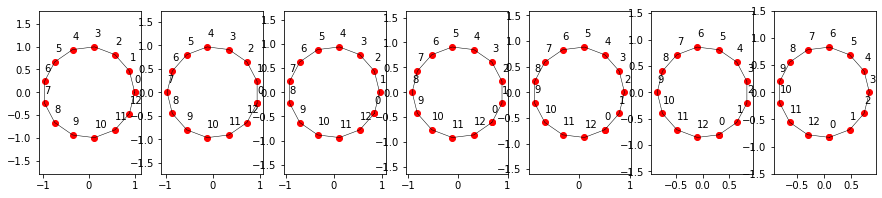
Apparently they are. They turn around, but that’s fine as it only is a complex prefactor introducing the turning and shrinking:
do_smoothing(eigenstate1, 1) / eigenstate1array([0.94272801-0.23236159j, 0.94272801-0.23236159j,
0.94272801-0.23236159j, 0.94272801-0.23236159j,
0.94272801-0.23236159j, 0.94272801-0.23236159j,
0.94272801-0.23236159j, 0.94272801-0.23236159j,
0.94272801-0.23236159j, 0.94272801-0.23236159j,
0.94272801-0.23236159j, 0.94272801-0.23236159j,
0.94272801-0.23236159j])Works out as expected. we even get the eigenvalues for free.
eigenvalue1 = (do_smoothing(eigenstate1, 1) / eigenstate1)[0]
eigenvalue2 = (do_smoothing(eigenstate2, 1) / eigenstate2)[0]
eigenvalue1, eigenvalue2((0.9427280128266048-0.2323615860218846j),
(0.9427280128266048+0.2323615860218846j))Decompose Initial State into Eigenstates
In order to find out how much of the eigenstates are included in our random initial state, we project the inital state onto the eigenvectors. This calls for the use of an inner product, which we readily have at hand with the familiar
def dot(v1, v2):
"""Dot Product between complex vectors"""
return np.dot(v1, np.conj(v2))Like in the good old QT days with Prof. H., we do first a normalization and check
eigenstate1 = eigenstate1 / np.sqrt(dot(eigenstate1, eigenstate1))
eigenstate2 = eigenstate2 / np.sqrt(dot(eigenstate2, eigenstate2))
dot(eigenstate1, eigenstate1), dot(eigenstate2, eigenstate2)((1+0j), (1+0j))Nicely normalized: Check. We can proceed:
Now, let’s do the projection and get the complex coefficients
c1 = dot(init_points, eigenstate1)
c2 = dot(init_points, eigenstate2)
c1, c2((0.5149093832008008-1.950855436819647j),
(0.07602149507747744+1.113740507931655j))Good, both eigenstates seem to be present in there. What can we do with that?
Representation as Ellipse
An general ellipse is parametrized by \(\varphi\) with \(a,b\) being the half axis and \(\theta\) a rotation angle. We define
def ellipse(a,b, phi, theta):
"""get coordinates of ellipse with half axes a,b rotated with theta, along parameter phi."""
c, s = a*np.cos(phi), b*np.sin(phi)
x = (s, c) # ellipse coordinate vector
# rotate it
c, s = np.cos(theta), np.sin(theta)
R = np.array(((c, -s), (s, c))) # rotation matrix
x_rot = np.matmul(R, x)
return x_rot[0] + 1j * x_rot[1] # go to complex representationAs our calculations show (they are still only on our window and wait to be transfered to the appendix in due time, of course), a superposition of both eigenstates result in a ellipse with the following parameters
\[ a = \left|\frac{|c_1| - |c_2|}{\sqrt N}\right|, \quad b = \frac{|c_1| + |c_2|}{\sqrt N} \]
and \[ \theta = \frac{\arg{c_1} + \arg{c_2}}{2}\]
So let’s give it a try:
steps = 300 # how many steps to iterate
# propagete eigenstates through smoothing operation by mulitplying eigenvalue 'steps' times
c1_it = c1 * np.power(eigenvalue1, steps)
c2_it = c2 * np.power(eigenvalue2, steps)
# magic, analytic formulas
a = np.abs(np.abs(c1_it) - np.abs(c2_it)) / np.sqrt(N)
b = (np.abs(c1_it) + np.abs(c2_it)) / np.sqrt(N)
theta = (np.angle(c1_it) + np.angle(c2_it)) / 2
ellipse_pts = [ellipse(a, b, phi, theta) for phi in np.linspace(0, 2*np.pi, 50)]
ax = plt.subplot(111)
show_points(ellipse_pts, labels=False, dots=False, ax=ax, linewidth=2)
show_points(do_smoothing(init_points - np.mean(init_points), steps), labels=False,ax=ax)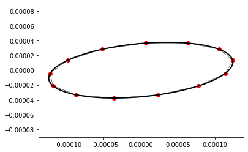
The comparison between the predicted shape and iteratively computed point distribution is rather satisfying.
As an encore, we provide the comparison of the prediction based only on the two dominant eigenvalues in comparison to the computed iterated polygon:
def show_iteration_vs_dominantEigenstates():
points = np.random.standard_normal(N) + np.random.standard_normal(N)*1j
points = points - np.mean(points)
c1 = dot(points, eigenstate1)
c2 = dot(points, eigenstate2)
steps = 3 # steps between plots
plt.figure(figsize=[10,10])
for i in range(16):
ax = plt.subplot(4, 4, i+1)
# show smoothed points
show_points(points, ax, labels=False)
# now, calculate our analytic prediction ellipse for this iteration:
# propagete eigenstates through smoothing operation by mulitplying eigenvalue 'steps' times
c1_it = c1 * np.power(eigenvalue1, i*steps)
c2_it = c2 * np.power(eigenvalue2, i*steps)
a = np.abs(np.abs(c1_it) - np.abs(c2_it)) / np.sqrt(N)
b = (np.abs(c1_it) + np.abs(c2_it)) / np.sqrt(N)
theta = (np.angle(c1_it) + np.angle(c2_it)) / 2
ellipse_pts = [ellipse(a, b, phi, theta) for phi in np.linspace(0, 2*np.pi, 50)]
show_points(ellipse_pts, labels=False, dots=False, ax=ax, linewidth=2)
# for next iteration, do smoothing
points = do_smoothing(points, steps)
show_iteration_vs_dominantEigenstates()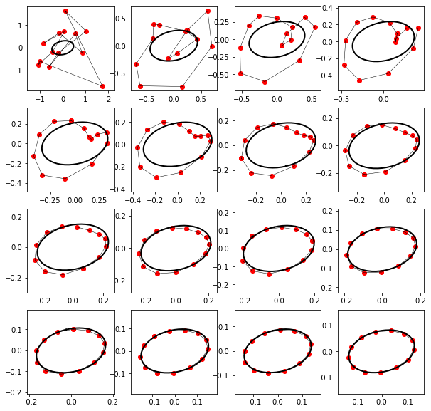
We see, how the dominant eigenstates start to fully describe the evolution.
Enforcement of Circular Convergence
Comparison before and after “Face-lifting”:
init_points = np.random.standard_normal(N) + np.random.standard_normal(N)*1j
init_points_facelifted = init_points - dot(init_points, eigenstate1) * eigenstate1
# eigenstate1 is hereby fully removed, only eigenstate2 and the other contributions survive
show_points(init_points, plt.subplot(121))
show_points(init_points_facelifted, plt.subplot(122))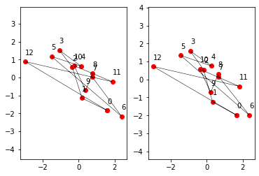
Let it roll…
steps = 4 # steps between plots
points = init_points_facelifted
plt.figure(figsize=[10,10])
for i in range(16):
ax = plt.subplot(4,4,i+1)
show_points(points, ax)
points = do_smoothing(points, steps)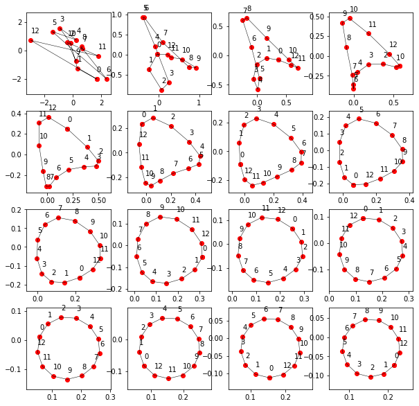
Amazingly, here you have your ordered circle.
Homework Exercise: How about a counter-clockwise arrangement? :-)
Answer to Question 3
We can conclude, that the following must be given in order to converge into a circle: Only clockwiseness or only counter-clockwiseness must be included in your start polygon, then it will evolve into a circle. While these terms are not well established in the community yet, we are confident that our work will have its impact here.
Conclusions and Acknowledgments
Dear reader, thank you for your appreciated attention!
With that we would like to thank for all inspirational inputs from our “physicist” friends!
Yours sincerly, L. and M.
Addendum: Fourier Analysis Approach
The sections in the main publication considered the smoothing process as a general linear operation. A eigenvecor/-state analysis allowed thereby to simplify the problem and understand its evolution through iterations. The yielded eigenstates were shown to be circles whose geometrical image allowed an intuitive understanding why they are eigenstates.
Shift Invariance
If we go on step further in analysis, we can readily observe that we not only have a linear operation, but a translation invariant: If we shift the indizes of the point of input state, the smoothing process \(\mathbb S\) will yield the same output as before, but with this output after the index shift. Index shift denoted by \(\mathcal R\) and smoothing operation \(\mathbb S\) commute:
\[ \vec x = (x_1, x_2, ... x_N), \, \mathcal R\,\vec x = \vec x' = (x_2, x_3, ... x_N, x_1): \quad \mathcal R (\mathbb S\,\vec x) = \mathbb S (\mathcal R \,\vec x) = \frac 1 2 (x_2+x_3, x_3+x_4, ...)\]
A general shift-invariant linear operation on continous functions are given by convolutions \[ (f \ast g)(x) \doteq \int \,dy\, g(y)\,f(x-y) = h(x), \quad f(x+\Delta x) \ast g(x) = h'(x) = h(x+\Delta x)\]
The convolution Fourier theorem tells us, that their corresponding Fourier transforms \(f(x) = \int\,dk\, \tilde{f}(k)\, \exp(ikx)\), …, are related by a simple multiplication
\[ \tilde{f}(k) \, \tilde{g}(k) = \tilde{h}(k) \]
This is an interesting fact and allows to write a convolution in much simpler terms. Let’s try to apply this to our case.
Discrete Fourier Transforms (DFT) Theory
As phycisists, we are well experienced with the continous Fourier transform. But we obviously dont have an continous function but discrete points \((x_1, x_2, ... x_n)\). Here is a short intro to the discret case. DFT is a very common tool in digital signal processing where the signal is sampled at a fixed frequency…
Discretness
Let’s define \(f(d), d \in \mathbb Z\). This simplifies the Fourier transform to
\[f(d) = \int^{2\pi}_{0}dk\, \tilde{f}(k)\, \exp(ikd)\]
Intuition: The wavevector spectrum is limited to \(0...2\pi\). Any oscillation faster than “one oscillation per 1 unit” is not needed, as we only evalute \(f(d)\) at integer \(d\). (This result is known as Nyquist-Shannon theorem and can be gained in a more formal way by multiplying a general \(f(x)\) with a Dirac comb which results in the mentioned consequences in wavevector spectrum).
Finiteness
The above results still assumed an umlimited number of points involved. Without loss of generality, we can define \(f(d)\) periodic, such that \(f(d) = f(d+N)\) holds. We limit the function to \(N\) different values. In general, a periodic function, like the newly defined \(f(d)\), can be represented with a discrete Fourier series
\[ f(x) = \sum_{k=-\inf}^{\inf}\, a(k) \, e^{i\frac{2\pi k}{N} x}, \quad a(k) \in \mathbb C .\]
Intuition: Only wavevectors with wavelenghts = repetion cycles which are integer fractions of the function cycle length \(N\), i.e. cycles which repeat after length \(N\), are present.
Discrete and Finite -> DFT
Taking both results, we ariive at the conclusion, that
\[ f(d) = \sum_{k=0}^{N-1}\, a(k) \, e^{i\frac{2\pi k}{N} d} \]
where the coefficients \(a(k) = \tilde{f}(k), \, k \in \{0, \ldots, N-1\}\) are the discrete Fourier transform of \(f(d)\).
We can explicitly calculate for two summands
\[ \sum_{d=0}^{N-1} e^{i\frac{2\pi k}{N} d} e^{-i\frac{2\pi k'}{N} d} = N \delta_{k-k'} \]
and thereby observe the orthogonality of different terms which is well known in the continous case (where a Dirac delta function is used).
Discrete Convolution
In analogy to the continous case, a discrete, cylic convolution can be defined by
\[ (f \ast g) (d) = \sum_{d'=0}^{N-1} g(d') f(d-d') \]
where we assumed \(f(d)\) to be periodic. By explicitly calculating, we find \[ (f \ast g) (d) = \sum_{d'=0}^{N-1} \left(\sum_{k=0}^{N-1}\, \tilde g(k) \, e^{i\frac{2\pi k}{N} d'}\right) \left(\sum_{k'=0}^{N-1}\, \tilde f(k') \, e^{i\frac{2\pi k'}{N} (d-d')}\right) = \sum_{k=0}^{N-1} \sum_{k'=0}^{N-1}\, \tilde g(k) \, \tilde f(k') \, \sum_{d'=0}^{N-1} e^{i\frac{2\pi k}{N} d'} e^{i\frac{2\pi k'}{N} (d-d')} \]
Evaluating the sum over \(d'\) and using the orthogonality condition found above, we find a \(N\delta_{k-k'}\) and therefore
\[ (f \ast g) (d) = N\,\sum_{k=0}^{N-1} \tilde g(k) \, \tilde f(k) \, e^{i\frac{2\pi k}{N} d} .\]
This is the equivalent result to the continous case: The convolution is a mutliplication in Fourier space.
Polygon Smoothing as Discrete Convolution
If we chose
\[ f(d) \doteq x_{d-1}, \, d \in {0, \ldots, N-1}, \quad g(0)= g(1) \doteq \frac 1 2, \, g(d) \doteq 0, \, d \in \{2,\ldots, N\}\]
and furthermore impose periodicity with \(f(d+N) = f(d)\), equally on \(g(d)\), both function are defined over \(\mathbb Z\), but represent \(N\) independent complex points. With and the above defined discrete convolution, we find
\[ (f \ast g) (d) = \sum_{d'=0}^{N-1} g(d') f(d-d') = h(d) = \frac{x_d+x_{d-1}} 2 \]
We observe that this corresponds to our smoothing/averaging process \(\mathbb S\)! It is a moving averaging operation performed on the set of points.
The Fourier convolution theorem tells us, that this linear, shift-invariant operation can be written in this discrete case with the transforms
\[ \tilde{h}(k) = N \tilde{f}(k)\,\tilde{g}(k), \, k \in \{0,N-1\}\]
If we iterate \(G\) times through the smooting, we arrive at the simple result \[ \tilde{h}(k) = \tilde{f}(k)\,(N\tilde{g}(k))^{G}\]
This fully determines the evolution. If \(N|\tilde g(k)|<1\), the components at given \(k\) are increasingly suppressed. With this, we got all eigenstates of the smoothign operation for free: They are apparatly the Fourier components of different \(k\).
Numeric Illustration
N = 13
initial_points = np.random.standard_normal(N) + np.random.standard_normal(N)*1j
f = initial_pointsLet’s generate to above defined \(g(d)\) with
g = np.zeros(N)
g[[0,1]] = 1/2
print(g)[0.5 0.5 0. 0. 0. 0. 0. 0. 0. 0. 0. 0. 0. ]Let Python calculate the DFT, as defined above, using FFT functions
f_tilde = np.fft.ifft(f)
g_tilde = np.fft.ifft(g)The smoothing iteration using the convolution theorem is illustrated here togehter with the Fourier transform:
steps_per_image = 10
n = 5
plt.figure(figsize=[25,5])
for i in range(n):
h_tilde = np.multiply(f_tilde, np.power(N*abs(g_tilde), i*steps_per_image)) # according to convolution fourier theorem, see above
h = np.fft.fft(h_tilde)
ax = plt.subplot(2,n,i+1)
ax.set_title("$\\tilde h(k)$")
ax.bar(range(N),abs(h_tilde))
ax = plt.subplot(2,n,i+n+1)
ax.set_title("$f(d)$")
show_points(h, ax=ax) 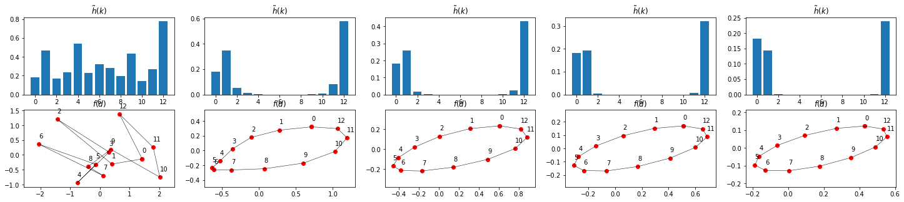
Things seemt to work out
Interpretation
As abovious from the multiplication factor \(\tilde g(k)\):
plt.plot(N*abs(g_tilde))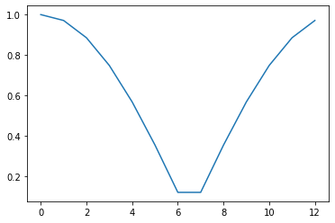
oscillations \(k=0, 1\) and \(N-1\) are dominant. All other are suppressed stronger and damped out in the iteration shown above.
As can be seen in the DFT defition, \(k=0\) corresponds to a constant, which here represents the center of gravity of the points which does not change through iterations: \(\tilde g(0) = 1\). \(k=1\) and \(N-1\) are the already known clockwise and counterclockwise circles. If added up in a linear combination, they result in an ellipse.
All the other Fourier terms are circles as well, but with winding number \(W\) larger than one. Just a few examples:
plt.figure(figsize=[25,4])
ws = range(-1,5)
for i, w in enumerate(ws):
ax = plt.subplot(1,len(ws), i+1)
ax.set_title("W = " + str(w))
a = np.zeros(N)
a[w % N] = 1
h = np.fft.ifft(a)
print(a)
show_points(h, ax=ax)[0. 0. 0. 0. 0. 0. 0. 0. 0. 0. 0. 0. 1.]
[1. 0. 0. 0. 0. 0. 0. 0. 0. 0. 0. 0. 0.]
[0. 1. 0. 0. 0. 0. 0. 0. 0. 0. 0. 0. 0.]
[0. 0. 1. 0. 0. 0. 0. 0. 0. 0. 0. 0. 0.]
[0. 0. 0. 1. 0. 0. 0. 0. 0. 0. 0. 0. 0.]
[0. 0. 0. 0. 1. 0. 0. 0. 0. 0. 0. 0. 0.]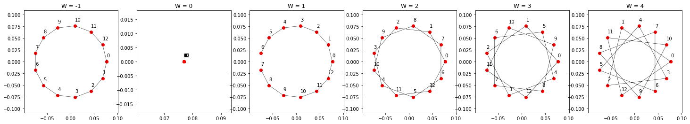
Insofar, we have to correct our answer above: we arrive at pure circles of only winding number \(W=1\) or -1 are present, not both. But any higher wining number of any sign (clockwise or counter clockwise) will be damped away anyways.
Geometrically, this is obvious: the more curved, the stronger diminished are the shapes in the smoothing process.
With that, we finally and ultimatley conclude :-)